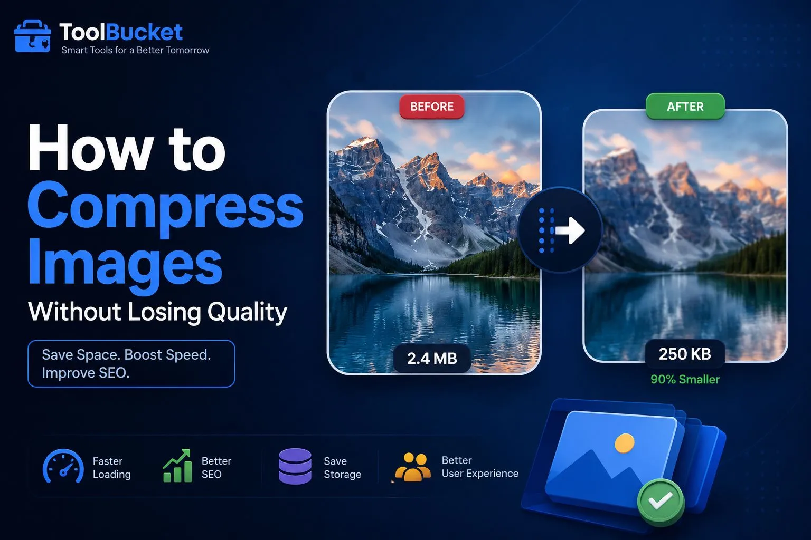
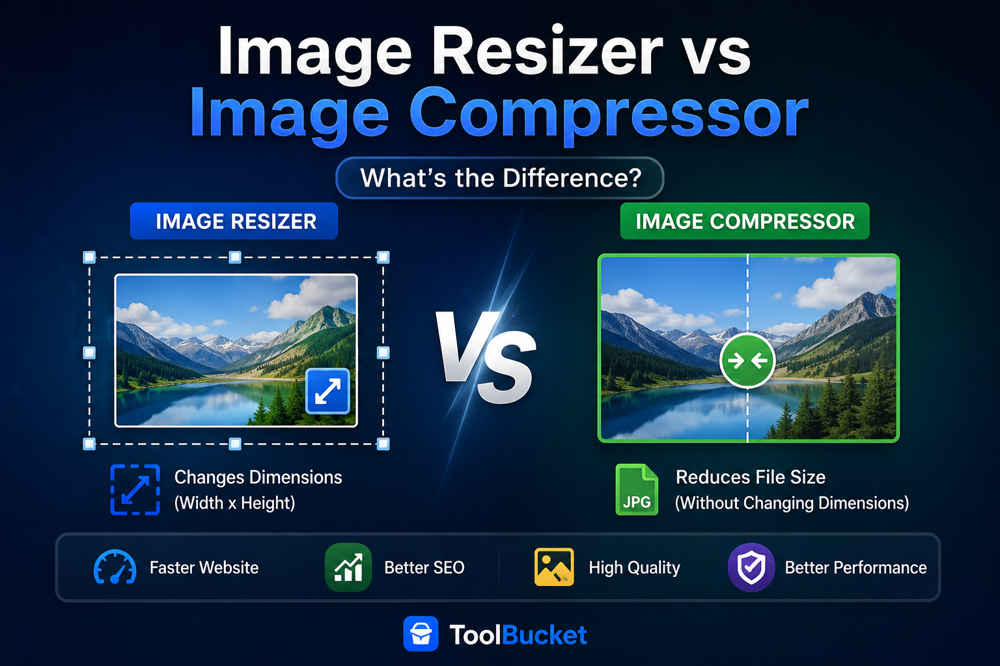

How to Compress Images Without Losing Quality
Learn how to reduce image size while keeping excellent quality.
Discover practical tutorials, detailed guides and productivity tips for Image Tools, PDF Tools, AI Tools and Web Development.
Read the newest tutorials and helpful guides.

Learn how to reduce image size while keeping excellent quality.

Explained the differences between Image Resizer vs Image Compressor

Learn how to compress JPG, PNG, and WebP images without losing quality. Improve website speed, save storage, and optimize images for better SEO.

Learn how to reduce photo size online while maintaining excellent image quality with simple compression tips.

Learn how to compress pictures online while keeping image quality sharp and improving website speed.

Learn the best ways to reduce image size in KB while keeping excellent image quality for websites, email, and social media.

Learn how to crop JPG, PNG, and WEBP images online without losing quality. Fast, free, secure, and easy to use on any device.

Compress image to 50KB online for free without losing quality. Reduce JPG, PNG, and WEBP image size instantly with ToolBucket. Fast, secure, and works on all devices.

Compress image online for free with ToolBucket. Reduce JPG, PNG and WebP image size while maintaining good quality. Fast, secure and no signup required.
Compress image size online for free with ToolBucket. Reduce image file size of JPG, PNG and WEBP images quickly while maintaining good quality. No signup required.
Compress image to 100KB online for free without losing quality. Reduce JPG, PNG and WEBP image size to 100KB instantly. Fast, secure and works on all devices.
Compress image to 50KB online for free without losing quality. Reduce JPG, PNG and WEBP image size to 50KB instantly. Fast, secure and works on all devices.
Compress image to 200KB online for free. Reduce JPG, PNG and WEBP image size to 200KB while maintaining excellent quality. Fast, secure and works on all devices.
Compress JPG images online for free without losing quality. Reduce JPG file size instantly using ToolBucket. Fast, secure, supports high-quality JPEG compression.
Compress PNG images online for free without losing quality. Reduce PNG file size while preserving transparency. Fast, secure and works on all devices.
Crop image online for free with ToolBucket. Trim, frame and resize the visible area of JPG, PNG and WEBP images directly in your browser.
Crop image online free with ToolBucket. Edit JPG, PNG and WEBP images in your browser with flexible cropping, aspect ratios, zoom and rotation.
Crop picture online with ToolBucket's free browser-based cropper. Trim unwanted areas, choose aspect ratios and download clean JPG, PNG or WEBP images.
Crop picture online free with ToolBucket. Edit JPG, PNG and WEBP images in your browser with flexible cropping, aspect ratios, zoom and rotation.
Cut image online with ToolBucket's free image cropper. Select the area to keep, remove unwanted edges, rotate and download JPG, PNG or WEBP images.
Convert JPG to PNG online for free. Create high-quality PNG images instantly with our fast, secure and browser-based JPG to PNG converter. No registration or software required.
Convert JPG to WEBP online for free. Reduce image file size while maintaining excellent visual quality with our fast, secure and browser-based JPG to WEBP converter.
Use ToolBucket as an online photo cropper to trim portraits, family photos, product images and social media pictures. Free, simple and browser-based.
Crop photos online with ToolBucket's free photo cropper. Adjust the crop area, rotate and zoom JPG, PNG and WEBP images, then download the result.
Use ToolBucket's free photo size reducer to reduce photo file size online. Compress JPG, PNG and WEBP photos quickly without signup or software.
Use ToolBucket's free picture cropper to cut unwanted areas from JPG, PNG and WEBP pictures. Crop, rotate, zoom and download online.
Convert PNG to JPG online for free without losing quality. Fast, secure and browser-based PNG to JPG converter. Reduce PNG file size and download high-quality JPG images instantly with ToolBucket.
Convert PNG to WEBP online for free. Reduce image file size while maintaining excellent quality with our fast, secure and browser-based PNG to WEBP converter.
Reduce image size online for free without losing quality. Compress JPG, PNG and WEBP images instantly using ToolBucket. Fast, secure and works on all devices.
Reduce image size in KB online for free with ToolBucket. Compress JPG, PNG and WEBP images to make image files smaller and easier to upload, share and store.
Reduce JPG size online for free with ToolBucket. Compress JPG and JPEG images quickly, lower file size, and download your smaller image without signup or software.
Reduce picture size online for free with ToolBucket. Make JPG, PNG and WEBP pictures smaller for websites, email, social media and sharing without signup.
Resize Image Online Free – Change Image Size Without Losing Quality | ToolBucket
Resize image to 20KB online for free using ToolBucket. Perfect for passport photos, government forms, exam applications and document uploads. Supports JPG, PNG and WEBP.
Resize image to 50KB online for free using ToolBucket. Perfect for email attachments, profile photos, online forms and website uploads. Supports JPG, PNG and WEBP.
Resize image to 100KB online for free using ToolBucket. Perfect for websites, blogs, social media, product photos and online uploads. Supports JPG, PNG and WEBP.
Resize JPG images online for free with ToolBucket. Easily change JPG width and height without installing software. Fast, secure and works on all devices.
Resize WEBP images online for free with ToolBucket. Easily change WEBP width and height for websites, blogs, apps and digital projects. Fast and secure.
Convert WEBP to JPG online for free without losing quality. Fast, secure and browser-based WEBP to JPG converter by ToolBucket.
Convert WEBP to PNG online for free. Create high-quality PNG images instantly with our fast, secure and browser-based WEBP to PNG converter. No registration or software required.